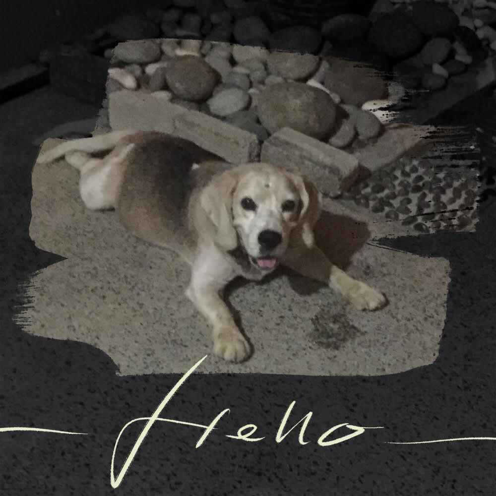
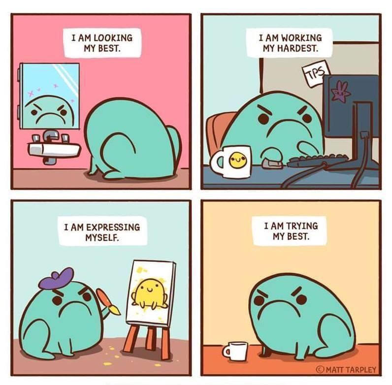
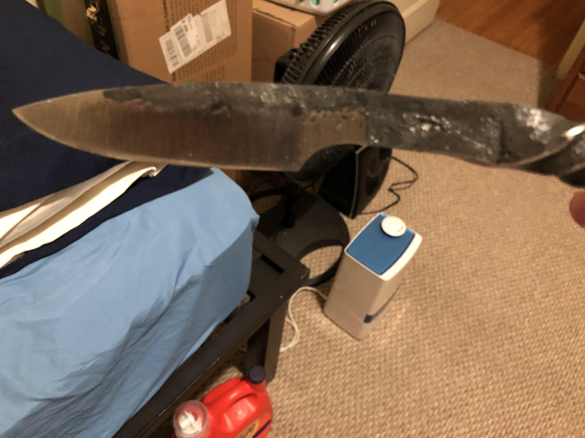
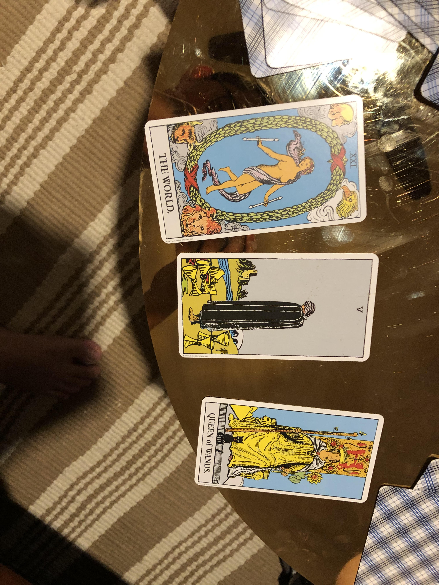
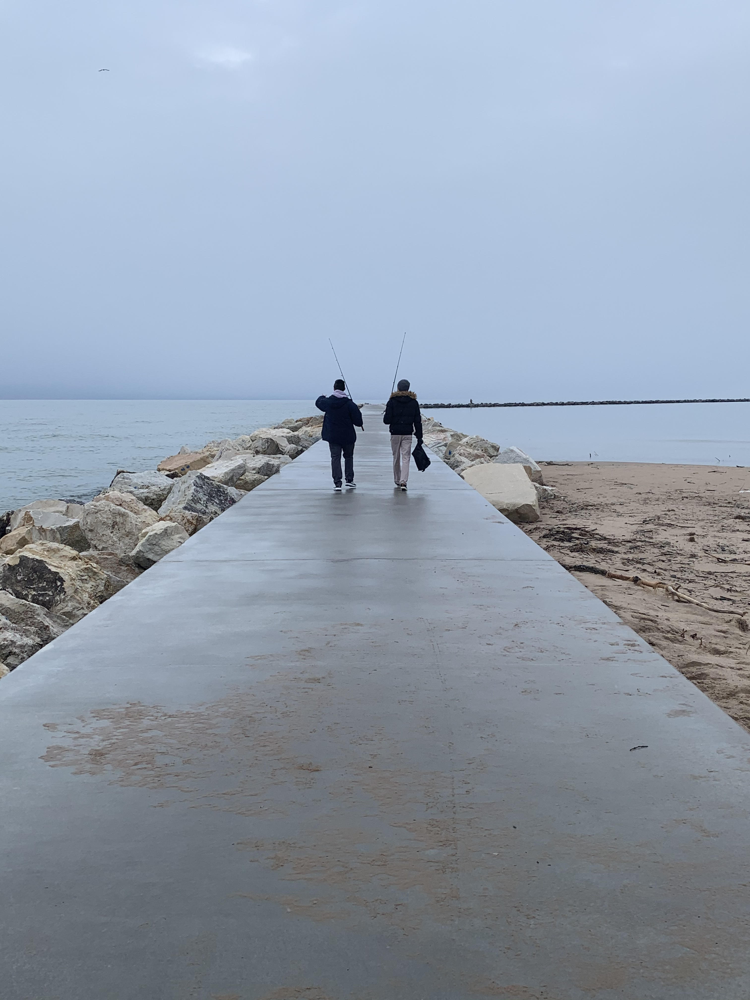
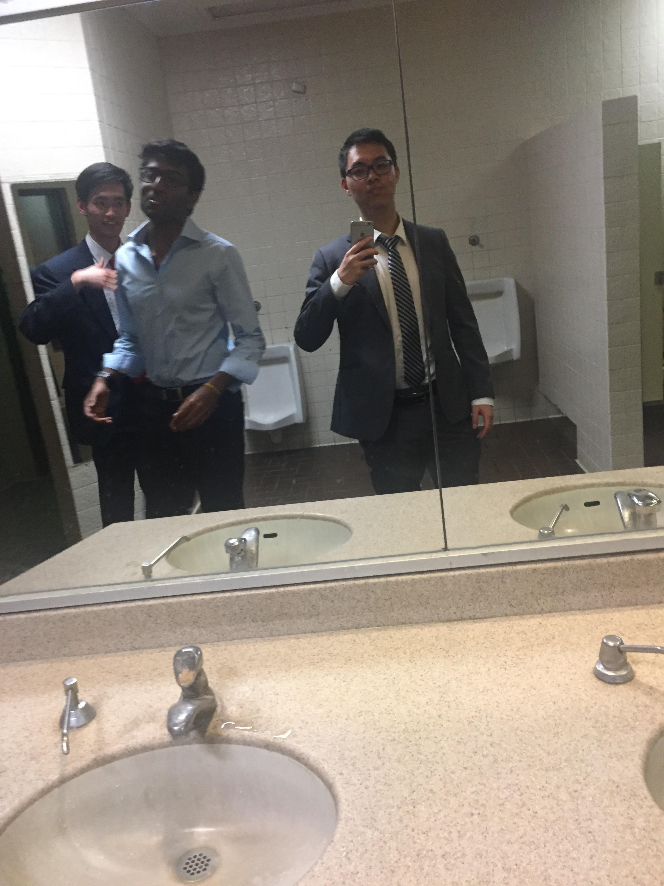

The detritus of a life well-lived
I try to make decisions based on regret-minimization. What can I do to make sure that I won't look back on what I did with regret? Very often that involves saying yes to things rather than no.
Can that approach backfire? Of course it can. In the last photo for example, we had just pulled over after both our driver and our navigator (me) had started hallucinating after days without sleep. That was dangerous, sure, but it won't ever regret the days we spent together.
Even blacksmithing is dangerous. Whilst forging the knife shown below, I burned my hands with molten steel 3 times. But just because something's painful or risky doesn't make it not worth doing.
Most people go through life trying to be as safe as possible. To use a finance analogy, they spend their time buying insurance when they should really be buying call options. I mean, we weren't born to spend our one shot on earth playing it safe.
-

Muffin was 12 when this picture was taken. What a very good boy.
-
Stubby lived for a mere 4 days. Look at what they did to my boy.
-
My last fishing trip. Didn't catch much.
-

My favourite meme.
-

The first knife I ever forged as a blacksmith-in-training.
-
That one time I went to Hong Kong for an internation competition and won.
-

My latest tarot card reading. Interpret it how you will.
-

Off to the great beyond.
-

Wearing suits when it's 4am in a New Jersey gas station is not the move. Don't ask.